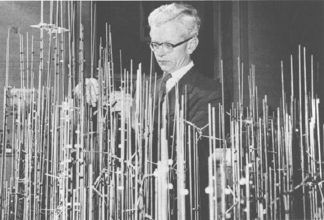

In October 1945 a young man in a smart Wing Commander's uniform walked into my room at the Cavendish Laboratory in Cambridge and said that he wanted to become my research student. He introduced himself as John Kendrew. I was flattered because I had never had a research student, let alone one hardly my junior who had distinguished himself in the war, but I also felt embarrassed, because my work on the structure of haemoglobin promised no quick solution on which anyone could earn a Ph.D. Walking across to the Molteno Institute, I ran into Joseph Barcroft, the great respiratory physiologist, who suggested that Kendrew might make a comparative study of adult and foetal sheep haemoglobin for which Barcroft would supply the blood. Much relieved, I suggested this to Kendrew who keenly took up the project.
To-day's readers can hardly imagine how courageous Kendrew's decision was then to take up protein crystallography. I had no research students, because responsible dons advised graduates against joining such a forlorn undertaking, but Kendrew's spirit of adventure won. He was born in Oxford in 1917, educated there at the Dragon School and then at Clifton College where an outstanding chemistry teacher inspired him. In 1936 he entered Trinity College, Cambridge, with a major scholarship; in 1939 he graduated in Chemistry and then began working for a Ph.D. in physical chemistry. The war diverted him to radar and later to operational research; he ended it as advisor to Lord Mountbatten's South Eastern Command in Ceylon.
In 1947, soon after Kendrew joined me, the MRC agreed to make us into a Research Unit for the Study of the Molecular Structure of Biological Systems, later to be renamed MRC Unit for Molecular Biology. When the present Laboratory of Molecular Biology opened in 1962, Kendrew became its deputy director, a post he held until 1974.
I found in Kendrew an outstandingly able, resourceful, meticulous, brilliantly organised, knowledgeable, hard worker and a stimulating, companion with wide interests in science, literature, music and the arts. Having carried sheep haemoglobin as far as was possible at the time, he embarked on his own project, the structure of myoglobin which has only a quarter of the molecular weight of haemoglobin and therefore seemed a more hopeful candidate for X-ray study. After a long struggle with myoglobin from horse heart which refused to yield crystals large enough for X-ray analysis, Kendrew realised that diving mammals and birds offered a better prospect, because nearly one tenth of the dry weight of their muscles consists of myoglobin which they use as an oxygen store. A chance encounter enabled me to get him a large chunk of sperm whale meat from Peru, and to our delight its myoglobin yielded large sapphire-like crystals which gave beautiful X-ray diffraction diagrams. However, there was still a seemingly insuperable obstacle.
The X-ray diffraction pattern from a crystal contains only half the
information needed to solve its structure: the amplitudes of the diffracted
rays, but not their phases, and there seemed to be no way of determining
these. Fortunately, I discovered in 1953 that the phase problem could be
solved by comparing the diffraction pattern from two crystals, one of the
native protein and the other of the protein with heavy atoms attached to it.
Kendrew, together with several able young men from the United States, Sweden
and Austria found ways of attaching heavy atoms to myoglobin in several
positions. By 1957 they obtained an electron density map at 6Å resolution
which allowed Kendrew to build a rough molecular model, and two years later
they extended the resolution to 2.0Å, allowing him to build an atomic model,
the first of any protein.

John Kendrew with his model of myoglobin in 1959. Photograph from Max Perutz
For this work, for the introduction of the heavy
atom method and for the solution of the haemoglobin structure at 5.5Å, we
were awarded the Nobel Prize for Chemistry in 1962.
That year also marked the end of Kendrew's scientific research. Realising perhaps that his talents lay more in organisation and diplomacy, he reverted first to his war-time interests by becoming part-time deputy to Solly Zuckerman, then Chief Scientific Advisor to the Ministry of Defence. Later, Kendrew's prime interest shifted to international scientific collaboration. He spoke fluent German, French and Italian and was a devoted European. As chairman of international committees, he was skilled at guiding members to a consensus and putting it into the right words. Kendrew was deeply concerned that European universities and research institutes were slow in grasping the promise of molecular biology, and that Europe was falling behind the United States in training young people in the subject.
In 1963, he therefore became one of the founders of EMBO, the European Molecular Biology Organisation which started the programme of travelling fellowships and summer schools that has been such an outstanding success. He also founded and remained for many years editor-in-chief of the Journal of Molecular Biology. He took great pride in it, and it became the journal where nearly all important papers in the subject used to appear. In 1974, after four years of patient and skilful diplomacy, he finally persuaded governments to build a European Laboratory of Molecular Biology in Heidelberg and became its first director. This great laboratory stands as his monument.
After his retirement from the European Molecular Biology Laboratory, Kendrew became President of St. John's College, Oxford, a post he held from 1981-1987. From 1974-79 he was a Trustee of the British Museum and from 1974 to 1988 he was successively Secretary General, Vice-President and President of the International Council of Scientific Unions. Kendrew's entry in Who's Who lists ten other important National and International committees on which he served as either member or chairman.
Kendrew died in Cambridge on 23rd August aged 80.
M. F. Perutz
30th September 1997
A Memorial Meeting with Music was held in Cambridge on 5th November 1997
Further details of his life and work can be found on the World
Wide Web mostly at the 'Electronic Nobel Museum'
where his work is often mentioned in descriptions of the work of later
Nobel prizewinners. Probably the most relevant ones are:
 Click here to return to BCA homepage
Click here to return to BCA homepage